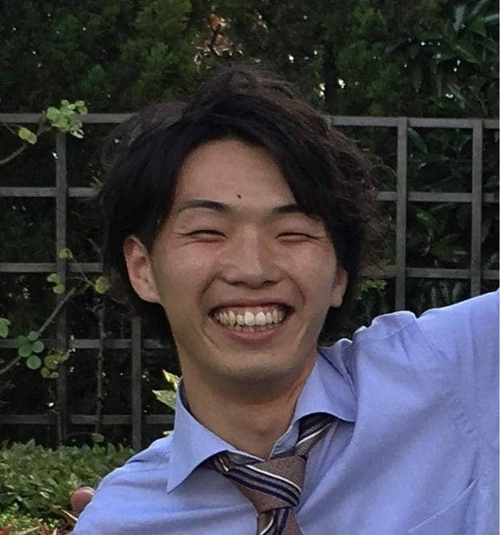

Personal Information

HN: Masa
Nationality: Japanese
Living place: Japan
Hobby: football, travel, hot spring
Brief Personal History
- 2014.3 Graduated from university
(Bachelor of Business Administration) - 2014.4 Joined a trading company
(Sales representative's position) - 2019.6 Resign to change my carrier
- 2019.6 Language study abroad in Philippine
- 2019.10 Move to Germany for job hunting
- 2020.3 Move to Japan due to Corona
- 2020.5 Joined a IT company
(Software developer's position)